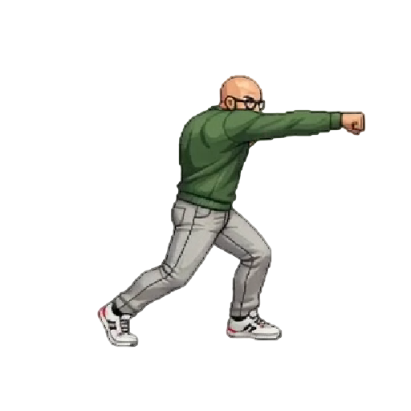
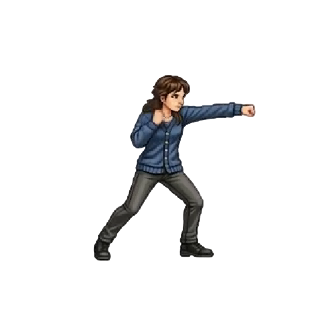
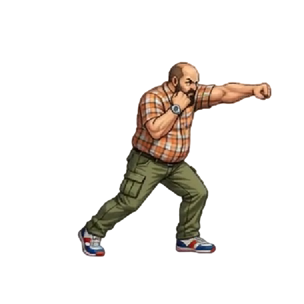
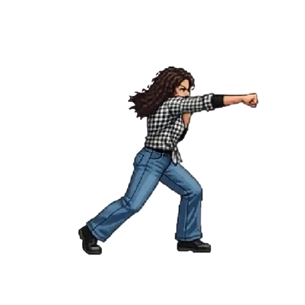
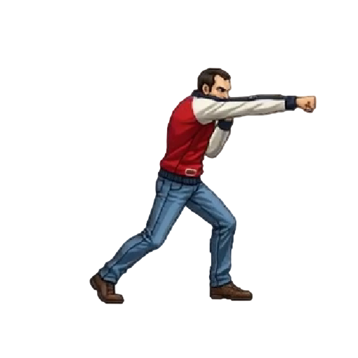
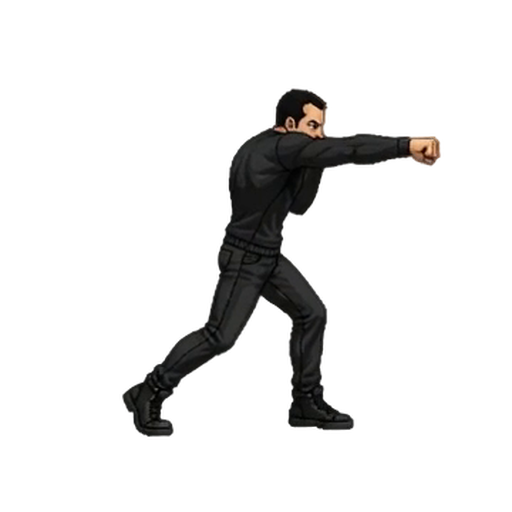
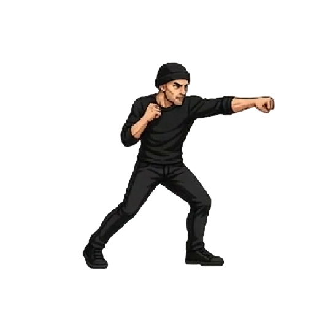
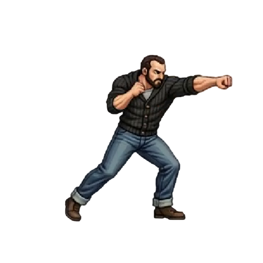
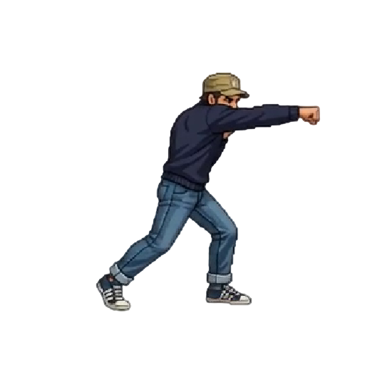

Apri Pugno medio nella demoTiming Pugno medio
Aggiornamento: 2026-11-18. Integrati 9 personaggi su 48. A velocita 1x il frame scelto di impatto principale inizia esattamente a 400 ms (0,40 s); il ciclo completo termina a 750 ms (0,75 s). La fase successiva all'impatto dura 350 ms (0,35 s).
Alberto, Fabio Clara, Pippo, Peppo, Oscar, Elisa, Fra Tavarone e Marsan usano l'andata seguita dagli stessi frame al contrario, senza raddoppiare il frame di inversione. L'ultimo frame del recupero e la guardia iniziale. Sboz usa solo la sequenza sorgente in avanti, che contiene gia il recupero.
Gli atlas referenziano le celle del PNG originale anche nel ritorno: i pixel non sono duplicati, ridimensionati o ricentrati. Le durate variabili sono incorporate nel catalogo offline e negli atlas, utilizzabili come riferimento per Godot. Gli fps medi non descrivono le due fasi: la tabella indica i millisecondi effettivi di ogni passo prima e dopo l'impatto.
La colonna Frame distingue le celle sorgente utilizzate dai passi della sequenza riprodotta, che includono il ritorno. I frame di sequenza in tabella partono da 1; gli indici sorgente partono da 0 e si riferiscono al foglio gia accorciato scaricato da AutoSprite. Nessun vecchio taglio e stato applicato una seconda volta. Per Marsan e escluso solo il frame isolato finale in guardia, indicato nelle note.
Il marcatore riguarda la posa scelta del colpo principale. Eventuali estensioni preliminari con altri bracci, scie grafiche e pose estese mantenute presenti negli asset approvati sono conservate e segnalate nelle note. Per questo alcune pose estese adiacenti possono comparire prima o dopo il marcatore. Riproduci tutte allinea le nove schede; modificare la velocita scala impatto e durata nella stessa proporzione.
Personaggi senza Pugno medio importato (39): ALEX, ANGELA, ANTONINO, BARBARA-FIOCCA, Bonazzi, Chiara-Molina, CHIARA-TONIOL, CONDELLO, DINO, EMMA, EROS, FARA, FRA-AMATO, FRANCESCA-RIVELLA, FRANCESCO-LEONI, GENNARO, Giordano, GIORGIO, JERRY, LIVIO, LUANA, MANU, MARCO-BALPO, Marco-Rossetti, MARIO, MARTINI, MATTEO, MIKE, MORI, PEIROLO, Simona, TOMMASO, ZICHELLA, Franco, Tamara, Patrick, Luca-Arcangeli, Cristian-Canino, Alessandro-Mantelli.
Scarica il report CSV · Timing JSON · Manifest e provenienza
| Personaggio | Posa scelta | Frame sorgente / riprodotti | Riproduzione | Frame impatto | Impatto | Fase successiva | Ciclo | Durata passo prima / dopo | Note | Asset |
|---|
| ALBERTO |  | 40 / 79 | Avanti e indietro | 25 / 79
sorgente 24 | 400 ms | 350 ms | 750 ms | 16.667 / 6.364 ms | Posa estesa mantenuta per piu fotogrammi; impatto scelto all'inizio della massima estensione. | Atlas e sequenza
cmwkzp2xo006o1a3mwgj5i9bt |
|---|
| Elisa |  | 40 / 79 | Avanti e indietro | 28 / 79
sorgente 27 | 400 ms | 350 ms | 750 ms | 14.815 / 6.731 ms | La sorgente include estensioni preliminari con entrambi i bracci; il marcatore riguarda l'estensione principale finale. | Atlas e sequenza
cmwl0z25900gdnl3z5dn1lryx |
|---|
| FABIO-CLARA |  | 35 / 69 | Avanti e indietro | 35 / 69
sorgente 34 | 400 ms | 350 ms | 750 ms | 11.765 / 10.000 ms | Massima estensione all'ultimo frame dell'andata. | Atlas e sequenza
cmwkzyhnq0093l2kmmmlm8w7w |
|---|
| FRA-TAVARONE |  | 44 / 87 | Avanti e indietro | 36 / 87
sorgente 35 | 400 ms | 350 ms | 750 ms | 11.429 / 6.731 ms | Movimento preliminare del braccio prima dell'estensione principale; tutti i frame del taglio salvato sono conservati. | Atlas e sequenza
cmwl0hqh500ji1a3mftilfo7q |
|---|
| MARSAN |  | 25 / 49 | Avanti e indietro | 23 / 49
sorgente 22 | 400 ms | 350 ms | 750 ms | 18.182 / 12.963 ms | Escluso soltanto il frame finale isolato in guardia (indice 25 del foglio scaricato), per evitare lo scatto prima del recupero inverso. Breve estensione preliminare conservata. | Atlas e sequenza
cmwl0mr0u00djnl3zpqq3nh71 |
|---|
| Oscar |  | 40 / 79 | Avanti e indietro | 33 / 79
sorgente 32 | 400 ms | 350 ms | 750 ms | 12.500 / 7.447 ms | Breve estensione preliminare e successivo colpo principale: impatto sincronizzato sulla massima estensione di quest'ultimo. | Atlas e sequenza
cmwkyan6600piuetsmn4tefpx |
|---|
| PEPPO |  | 35 / 69 | Avanti e indietro | 32 / 69
sorgente 31 | 400 ms | 350 ms | 750 ms | 12.903 / 9.211 ms | Scie grafiche presenti nella sorgente conservate, anche al ritorno; scelta una posa estesa senza la scia sovrapposta al pugno. | Atlas e sequenza
cmwl06ywk00h81a3mzqfjhdk0 |
|---|
| PIPPO |  | 18 / 35 | Avanti e indietro | 15 / 35
sorgente 14 | 400 ms | 350 ms | 750 ms | 28.571 / 16.667 ms | Nuova versione del 18 novembre 2026: 18 frame sorgente gia accorciati, andata e ritorno inverso. Massima estensione al frame sorgente 14 (da 0), sincronizzata a 400 ms; posa estesa mantenuta nei frame successivi. | Atlas e sequenza
cmwlwgge3000yjzef08f7pvlp |
|---|
| SBOZ |  | 52 / 52 | Solo avanti | 29 / 52
sorgente 28 | 400 ms | 350 ms | 750 ms | 14.286 / 14.583 ms | Solo avanti: il recupero e gia nella sorgente. Breve pugno preliminare con l'altro braccio; il marcatore riguarda il colpo principale. | Atlas e sequenza
cmwkzgkmk006pk85949euylx2 |
|---|